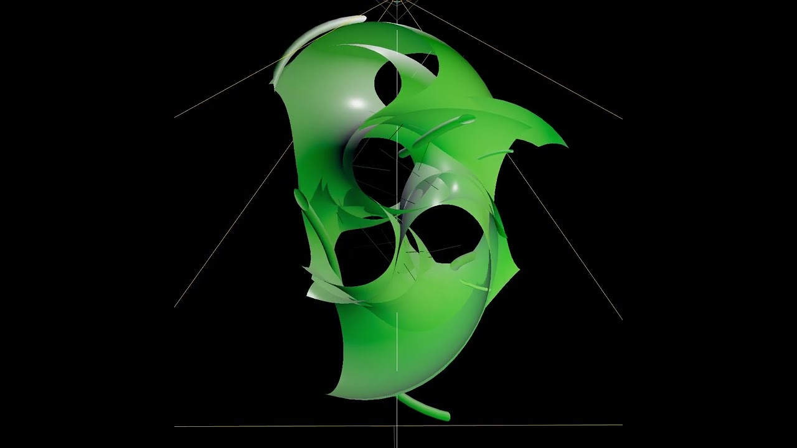
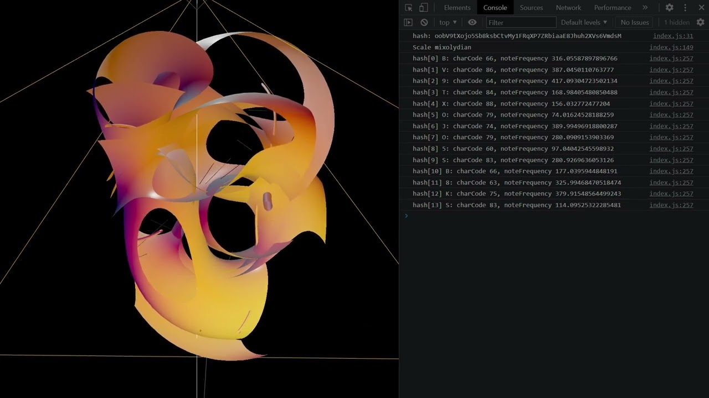

Phantom Masks
Phantom Masks
Alexandre Rangel, 2022Série de Arte Generativa 'Phantom Masks' (Máscaras Fantasma)
Aparições multidimensionais por meio de estruturas matemáticas geométricas na blockchain Tezos.
Representação figurativa tradicional encontra a organização de padrões em cabeças robóticas de sonho. A tradição da criação e representação de máscaras da arte moderna em diálogo com sempre mutáveis programas de computador e os sempre presentes erros e desvios imprevisíveis. Como uma forma de metalinguagem, o computador lê e remixa características faciais humanas e andróides, enquanto a criação automatizada imita o seu criador. Os retratos generativos robóticos atuam como lentes de aumento no código fonte da obra. 'Phantom Masks' generative art series
Multidimensional apparitions via mathematical geometric structures in the blockchain.
Figurative representational tradition meets code pattern ordering as dream-like robot heads. The tradition of face mask making and representation in modern art in dialogue with the ever changing all-possible computer programs and always present unforeseen glitch errors. As a meta-language, the computer reads and mixes human and android facial features, as the automatic creation mimics its creator. The robot generative portraits act as looking glass into the source code of the artwork.

Máscaras Fantasma
Phantom Masks
